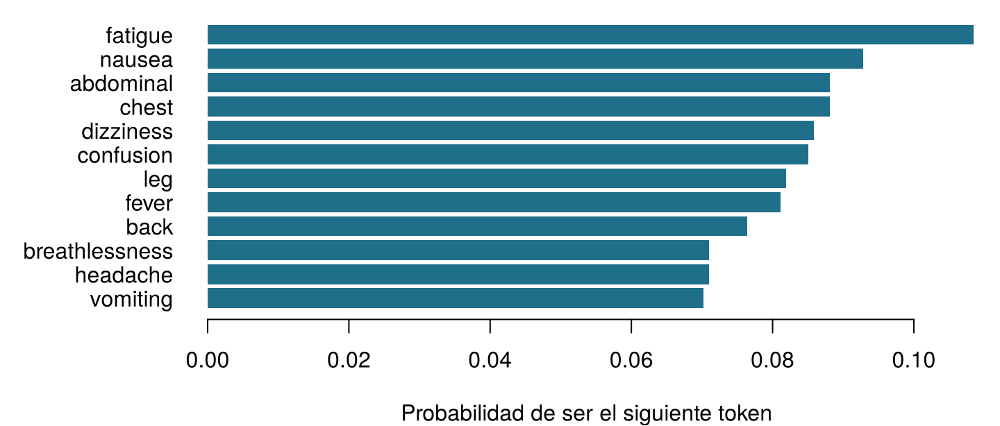
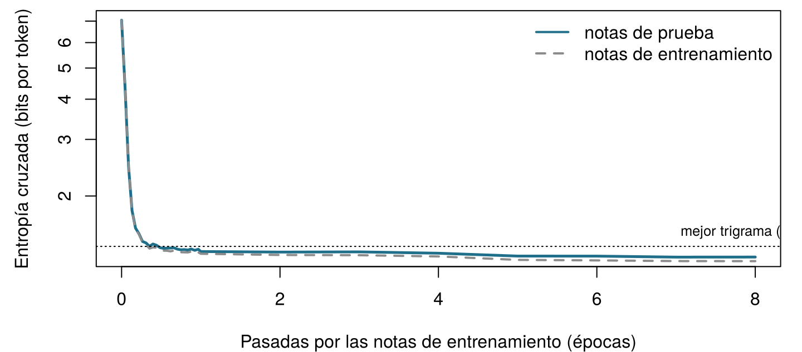

| note_id | set | text |
|---|---|---|
| N0001 | train | aki confirmed . |
| N0002 | train | patient reports vomiting . patient denies leg pain since yesterday . |
| N0004 | train | patient denies nausea since last night . |
| N0009 | train | patient reports breathlessness since this morning . patient reports headache since last night . |
| N0011 | train | started gentamicin today , patient complains of nausea , check gentamicin level tomorrow . |
| N0012 | train | lipase rising , pancreas function worsening . |
16 Predecir la siguiente palabra: modelos de lenguaje y embeddings
Antes de cualquier fórmula, cuenta. Aquí tienes seis notas breves de la UCI Sala 7 (en inglés: patient = paciente, reports = refiere, denies = niega, pain = dolor, nausea = náuseas, fever = fiebre, since yesterday = desde ayer, no evidence of = sin signos de).
patient reports pain . · patient reports nausea . · patient denies pain . · patient reports pain since yesterday . · patient reports fever . · no evidence of pain .
| Pregunta | Tu respuesta |
|---|---|
| ¿Cuántas veces aparece la palabra reports? | |
| ¿En cuántas de esas veces va seguida de pain? | |
| Entonces, a partir de estas notas, ¿cuál es la probabilidad de que la palabra que sigue a reports sea pain? (un número entre 0 y 1) | |
| Un sistema que siempre escribe la siguiente palabra más frecuente teclea patient. ¿Qué escribe a continuación? |
Cómo usar este capítulo
¿Empiezas aquí?
Este capítulo toma prestadas algunas ideas de capítulos anteriores.
- Tokens y vocabulario (Capítulo 15). Un texto se corta en tokens (palabras, trozos de palabras o caracteres, según el tokenizador); el conjunto de tokens distintos es el vocabulario \(\mathcal{V}\), de tamaño \(|\mathcal{V}|\), y el token en la posición \(t\) se escribe \(w_t\). Aquí las notas ya son palabras en minúsculas y signos de puntuación separados por espacios, así que un token es simplemente una palabra o un signo de puntuación.
- Probabilidad, probabilidad condicional y máxima verosimilitud (Capítulo 2). \(P(A \mid B)\) es la probabilidad de \(A\) cuando se conoce \(B\); la estimación de máxima verosimilitud de una proporción es el número de éxitos dividido entre el número de intentos, \(k/n\).
- Entropía (Capítulo 2): la sorpresa media de un resultado, \(-\log_2 P\), medida en bits. El Capítulo 2 prometió que volvería como la pérdida con la que se entrenan los modelos de lenguaje; es lo que ocurre en la Sección 16.5.
- Softmax y descenso del gradiente (Capítulo 7): la softmax convierte una lista de puntuaciones en probabilidades que suman uno; el descenso del gradiente ajusta los pesos de una red para reducir una pérdida.
- Similitud coseno (Capítulo 10, Capítulo 15): el coseno del ángulo entre dos vectores, 1 cuando apuntan en la misma dirección y 0 cuando son perpendiculares.
- Datos de entrenamiento y de prueba (Sección 1.8): un modelo se juzga con datos que no vio mientras se construía.
| Ejemplo | Quién o qué | Desenlace | Caras que vas a conocer |
|---|---|---|---|
| 1 UCI Sala 7 | 1250 pacientes de UCI en 4 hospitales | variación de la creatinina en 48 h (lesión renal aguda si ≥ 0,3 mg/dL) | Aoife (71 años, sepsis, riesgo limítrofe), Tomás (54 años, riesgo bajo), Priya (38 años, riesgo alto); la Dra. Emma Walsh; Seán, el farmacéutico |
| 2 Ensayo ONCO-1 | 1000 pacientes aleatorizados a quimioterapia o no | reducción del tumor (%) | pacientes #0042 y #0917 |
| 3 HomeBeat | 500 personas que llevan un reloj inteligente en casa | puntuación de estrés, evento de deterioro | Lena |
| 4 CellWorks | 420 lotes de producción de una terapia celular | puntuación de potencia | lote CW-118 |
Los cuatro conjuntos de datos son simulados y pueden descargarse en el apéndice de datos. La presentación completa está en la Sección 1.1.
Este capítulo explica cómo escribe texto una máquina, un token cada vez. Tiene diez secciones y un Laboratorio, ocho comprobaciones rápidas, cuatro widgets “Pruébalo”, un desafío y tres misiones de programación en R y Python. Reserva unos 100 minutos. Los modelos son lo bastante pequeños para entenderlos por completo y, salvo dos que se entrenaron de antemano, para ejecutarlos en tu navegador.
Notación de un vistazo (solo para consulta)
| Símbolo | Significado | Sección |
|---|---|---|
| \(\mathcal{V}\), \(\lvert\mathcal{V}\rvert\) | vocabulario y su tamaño | Sección 16.2 |
| \(w_t\), \(w_{1:N}\) | token en la posición \(t\); una secuencia de \(N\) tokens | Sección 16.2 |
| \(w_{<t}\) | todos los tokens anteriores a la posición \(t\) (el contexto) | Sección 16.2 |
| \(P_\theta(w_t \mid w_{<t})\) | probabilidad del siguiente token dada por un modelo con parámetros \(\theta\) | Sección 16.2 |
| \(c(\cdot)\) | número de veces que aparece un token o una secuencia en las notas de entrenamiento | Sección 16.4 |
| \(\delta\) | pseudorrecuento que se suma en el suavizado add-\(\delta\) | Sección 16.4 |
| \(H(P)\), \(H(P, Q)\) | entropía y entropía cruzada, en bits | Sección 16.5 |
| \(D_{\text{KL}}(P \,\Vert\, Q)\) | divergencia de Kullback-Leibler | Sección 16.5 |
| PPL | perplejidad | Sección 16.5 |
| \(\mathbf{z}\), \(z_j\) | logits (puntuaciones antes de la softmax) | Sección 16.6 |
| \(\tau\) | temperatura de muestreo | Sección 16.6 |
| \(\mathbf{e}_w\), \(\mathbf{E}\), \(d\) | embedding del token \(w\); matriz de embeddings; dimensión del embedding | Sección 16.7 |
| \(\mathbf{h}_t\) | estado oculto tras leer el token \(t\) | Sección 16.9 |
La lista completa está en la página de notación.
16.1 Los datos: ocho mil notas breves
Los modelos de lenguaje aprenden de textos, así que necesitamos un corpus. Las notas clínicas reales son información sanitaria protegida y no pueden distribuirse con un libro; por eso, este capítulo usa 8 000 notas simuladas de la UCI Sala 7, generadas por una pequeña gramática con una semilla aleatoria fija (sim_ch16_ward7_notes.py). No describen a ninguna persona real y, como en el hospital de la Sala 7, están escritas en inglés. Cada nota tiene una o dos oraciones breves: un síntoma, un fármaco iniciado, una tendencia de laboratorio, una negación, un plan, un comentario de un miembro del personal. De estas notas, 7 147 forman el conjunto de entrenamiento y las 853 restantes, el conjunto de prueba.
Las notas de entrenamiento contienen 65 431 tokens tomados de un vocabulario de solo 129 palabras y signos de puntuación distintos. Eso es minúsculo al lado de los cientos de miles de millones de tokens con los que se entrenan los modelos de lenguaje modernos (Brown et al. 2020), y las notas son mucho más repetitivas que la escritura clínica real. Es deliberado: como se conoce la gramática que generó las notas, podemos comprobar qué ha aprendido cada modelo, como hicimos con los conjuntos de datos simulados de capítulos anteriores. La gramática también esconde tres trampas que haremos saltar más adelante: los fármacos de la misma clase aparecen en frases parecidas; algunas notas nombran un fármaco y piden, una o dos oraciones después, controlar el nivel de ese mismo fármaco; y el pronombre que sigue a cada función del personal está deliberadamente desequilibrado, como ocurre en muchos textos reales.
16.2 Un modelo de lenguaje asigna probabilidades al siguiente token
El autocompletado de la pantalla de Seán hace una sola cosa: dado el texto hasta el momento, asigna a cada token de su vocabulario una probabilidad de venir a continuación y muestra el más probable. Tras “patient reports” (“el paciente refiere”), las notas de la UCI Sala 7 continúan con un síntoma o una región del cuerpo. Contar lo que sigue a esas dos palabras en las notas de entrenamiento da las probabilidades de la Figura 16.1.

Definición 16.1 (Modelo de lenguaje) Un modelo de lenguaje es una distribución de probabilidad sobre secuencias de tokens. En la práctica se especifica mediante sus probabilidades del siguiente token \(P_\theta(w_t \mid w_{<t})\): para cada posición \(t\) y cada contexto posible \(w_{<t} = (w_1, \dots, w_{t-1})\), una probabilidad para cada token del vocabulario, que suman uno. Los parámetros \(\theta\) se estiman a partir de un corpus de entrenamiento (Jurafsky y Martin 2026, cap. 3).
De esta definición se derivan dos operaciones. Puntuar: el modelo puede decir cuán probable es un texto entero, lo que nos permite comparar modelos y detectar textos inusuales. Generar: el modelo puede escribir, eligiendo un siguiente token a partir de su distribución, añadiéndolo al texto y repitiendo. Un chatbot que responde a una pregunta hace exactamente esto, token tras token; el resto de la Parte V explica cuánta maquinaria puede caber dentro de \(P_\theta\), pero el bucle exterior nunca cambia.
La idea es anterior a la informática. En 1913, Andréi Márkov contó a mano con qué frecuencia una vocal sigue a una vocal o a una consonante en 20 000 letras de Eugenio Oneguin, de Pushkin, para mostrar que las letras de un texto no son extracciones independientes (Markov 2006). En 1951, Claude Shannon pidió a varias personas que adivinaran la siguiente letra de un texto en inglés y usó su tasa de aciertos para estimar cuán predecible es el inglés (Shannon 1951). Un modelo de lenguaje juega al juego de adivinanzas de Shannon.
El autocompletado sugiere gentamicin. ¿Qué ha calculado exactamente el modelo?
16.3 La regla de la cadena: la probabilidad de una nota entera
Una nota es una secuencia de tokens \(w_1, w_2, \dots, w_N\). Su probabilidad siempre puede escribirse como un producto de probabilidades del siguiente token. Con dos tokens, la definición de probabilidad condicional del Capítulo 2 da \(P(w_1, w_2) = P(w_1)\,P(w_2 \mid w_1)\); aplicarla una y otra vez da la regla general.
Definición 16.2 (Regla de la cadena de la probabilidad) Para cualquier secuencia de tokens, \[ P(w_1, w_2, \dots, w_N) = P(w_1)\, P(w_2 \mid w_1)\, P(w_3 \mid w_1, w_2) \cdots P(w_N \mid w_1, \dots, w_{N-1}) = \prod_{t=1}^{N} P(w_t \mid w_{<t}) . \qquad(16.1)\] La regla es exacta: no implica ningún supuesto. Convierte la tarea imposible de asignar una probabilidad a cada texto posible en una secuencia de predicciones del siguiente token (Jurafsky y Martin 2026, cap. 3).
Para marcar dónde empieza y dónde termina una nota añadimos dos tokens especiales, <s> (inicio) y </s> (fin): la primera predicción es \(P(w_1 \mid \texttt{<s>})\), y el modelo también debe predecir </s>, para aprender cuándo se ha terminado una nota. La Tabla 16.2 aplica la Ecuación 16.1 a la nota “patient reports chest pain .” (“el paciente refiere dolor torácico .”), con cada factor estimado contando en las notas de entrenamiento cuántas veces la palabra sigue a la anterior (el método de la sección siguiente).
| Paso | Token anterior | Token siguiente | Probabilidad | Sorpresa (bits) |
|---|---|---|---|---|
| 1 | <s> |
patient |
0.207 | 2.28 |
| 2 | patient |
reports |
0.493 | 1.02 |
| 3 | reports |
chest |
0.088 | 3.50 |
| 4 | chest |
pain |
1.000 | 0.00 |
| 5 | pain |
. |
0.595 | 0.75 |
| 6 | . |
</s> |
0.729 | 0.46 |
Multiplicar los seis factores da \(P(\text{nota}) \approx\) 0,0039. Parece minúsculo, pero es la probabilidad de esta secuencia exacta entre todas las notas que el modelo podría escribir. Los textos largos tienen probabilidades astronómicamente pequeñas, tanto que las máquinas las redondean a cero. El remedio es sumar logaritmos en lugar de multiplicar probabilidades: la log-probabilidad de la nota es la suma de las log-probabilidades de cada token, y el opuesto de esa suma, en base 2, es la sorpresa total, aquí 8,01 bits. Todo modelo de lenguaje, desde esta tabla hasta el chatbot más grande, se entrena y se evalúa con sumas como esta.
Una de las seis probabilidades de la Tabla 16.2 se sustituye por 0, porque un modelo nunca ha visto ese par de palabras. ¿Qué les ocurre a la probabilidad de la nota entera y a su sorpresa total?
16.4 Modelos de n-gramas: predecir contando
La regla de la cadena pide \(P(w_t \mid w_{<t})\) dado el contexto entero, pero la mayoría de los contextos largos aparecen una sola vez, o ninguna, en cualquier corpus. La solución más antigua es olvidarlo todo salvo los últimos tokens.
Definición 16.3 (Modelo de n-gramas) Un modelo de n-gramas supone que el siguiente token depende solo de los \(n-1\) tokens anteriores (un supuesto de Márkov): \[ P(w_t \mid w_{<t}) \approx P(w_t \mid w_{t-n+1}, \dots, w_{t-1}) . \] Un modelo de bigramas (\(n = 2\)) mira un token anterior; un modelo de trigramas (\(n = 3\)), dos. Las probabilidades se estiman contando, que es la estimación de máxima verosimilitud: \[ \hat P(w_t \mid w_{t-1}) = \frac{c(w_{t-1}\, w_t)}{c(w_{t-1})} , \qquad(16.2)\] donde \(c(\cdot)\) cuenta las apariciones en el corpus de entrenamiento (Jurafsky y Martin 2026, cap. 3).
(Aquí la letra \(n\) es el orden del modelo, un nombre consagrado; no tiene nada que ver con el número de instancias \(n\) de los capítulos anteriores.) La Ecuación 16.2 es el \(k/n\) del Capítulo 2 con ropa nueva: de las \(c(w_{t-1})\) veces que apareció el token anterior, la proporción seguida de \(w_t\). En las notas de entrenamiento, reports aparece 1 282 veces y va seguido de chest (tórax) en el 8,8 % de ellas, así que \(\hat P(\text{chest} \mid \text{reports}) =\) 0,088. Hiciste el mismo cálculo con seis notas en la puerta de entrada de este capítulo.
Un escritor de bigramas. El widget cuenta cada par de tokens consecutivos en las 7 147 notas de entrenamiento y luego escribe notas nuevas extrayendo repetidamente el siguiente token en proporción a cuántas veces siguió al token actual. Cada fila de la tabla es un factor de la regla de la cadena. Elige una palabra abajo para ver la distribución de la que extrae y mueve el control de suavizado (explicado después del widget) para ver qué pasa con las palabras que nunca la siguieron. Genera tres notas.
El escritor de bigramas produce notas sensatas a escala local que a veces se pierden: como solo recuerda un token, puede empezar con un fármaco y terminar con un síntoma, o repetir una oración. Su otra debilidad está en la tabla: un par que nunca ha visto recibe probabilidad cero y, como mostró la comprobación rápida, un solo cero hace imposible una nota entera.
16.4.1 ¿Cuán dispersos son los recuentos?
Los contextos más largos afinan las predicciones, pero adelgazan los recuentos. Con 130 tokens posibles en cada posición del contexto (las palabras más <s>), hay 130 contextos posibles de un token, 16 900 contextos de dos tokens, y así sucesivamente. La Tabla 16.3 muestra cuán pocos de ellos llegan a aparecer en las notas de entrenamiento.
| Modelo | Longitud del contexto | Contextos vistos | Contextos posibles | Fracción vista |
|---|---|---|---|---|
| bigrama | 1 | 130 | 130 | 1 |
| trigrama | 2 | 398 | 16 900 | 0.024 |
| 4-grama | 3 | 1 429 | 2 197 000 | 0.00065 |
| 5-grama | 4 | 3 338 | 285 610 000 | 1.2e-05 |
| 6-grama | 5 | 6 033 | 37 129 300 000 | 1.6e-07 |
Incluso en este corpus pequeño y repetitivo, un modelo de 4-gramas solo ha visto una fracción minúscula de los contextos que podría encontrarse. Con un vocabulario real de decenas de miles de tokens, el problema es abrumador: la mayoría de las frases perfectamente corrientes contienen secuencias de palabras que ningún corpus ha registrado jamás.
16.4.2 Suavizado: nunca digas nunca
Fíjate en la palabra meropenem. En las notas de la UCI Sala 7 es siempre el antibiótico al que alguien cambia, nunca uno que se inicia (started), así que \(\hat P(\text{meropenem} \mid \text{started}) =\) 0. Una nota que dijera “started meropenem for sepsis” (“iniciado meropenem por sepsis”) se declararía imposible, aunque cualquier farmacéutico sabe que es algo corriente. El suavizado traslada un poco de probabilidad de lo que se ha visto a lo que no.
Definición 16.4 (Suavizado) El suavizado (smoothing) ajusta las probabilidades basadas en recuentos para que ningún token posible tenga probabilidad cero. La versión más sencilla, el suavizado add-\(\delta\), suma un pseudorrecuento \(\delta > 0\) a cada recuento: \[ \hat P_\delta(w_t \mid w_{t-1}) = \frac{c(w_{t-1}\, w_t) + \delta}{c(w_{t-1}) + \delta\, |\mathcal{V}|} , \qquad(16.3)\] donde \(|\mathcal{V}|\) es el número de tokens que pueden venir a continuación. Con \(\delta = 1\) se llama suavizado de Laplace o add-one (sumar uno) (Jurafsky y Martin 2026, cap. 3).
started aparece 1 463 veces en las notas de entrenamiento y hay 130 posibles tokens siguientes (las 129 palabras y signos de puntuación, más </s>); así, con el suavizado add-one, \(\hat P_1(\text{meropenem} \mid \text{started}) = 1 / (1463 + 130) \approx\) 0,00063: pequeña, pero ya no cero. La misma cantidad va a “started started” y “started ,”, que no son corrientes en absoluto: el suavizado no sabe distinguir los huecos plausibles de los absurdos, y en las próximas secciones los embeddings sí sabrán. \(\delta\) es un hiperparámetro, que debe elegirse con datos de validación (Capítulo 3); puedes observar su efecto en el widget anterior. Existen esquemas mejores, como el backoff (retroceso) a contextos más cortos y el suavizado de Kneser-Ney, que fueron el estado del arte durante décadas (Katz 1987; Kneser y Ney 1995; Chen y Goodman 1999).
Un modelo de trigramas entrenado con las notas de la UCI Sala 7 se usa con informes de alta de la planta de cardiología. ¿Qué afirmación es más exacta?
Cuenta tu propio bigrama. Las notas de entrenamiento ya están cargadas y cortadas en una tabla de pares de tokens consecutivos, bigrams, con las columnas prev (anterior) y nxt (siguiente) (<s> y </s> marcan el inicio y el fin de cada nota). Usando la Ecuación 16.2, estima la probabilidad de que el token que sigue a denies (niega) sea fever (fiebre). Rellena el hueco.
El hueco es la palabra cuya probabilidad quieres, escrita como una cadena entre comillas.
mean(after == "fever")El hueco es la palabra cuya probabilidad quieres, escrita como una cadena entre comillas.
(after == "fever").mean()16.5 Entropía cruzada y perplejidad: ¿cuánto se sorprende el modelo?
Ya tenemos varios modelos de lenguaje (de bigramas o de trigramas, con más o menos suavizado) y necesitamos una forma de compararlos. Como siempre, la comparación se hace con textos que los modelos no han visto: las 853 notas de prueba. Un buen modelo es el que no se sorprende con ellas, es decir, el que dio una probabilidad alta a los tokens que realmente vinieron a continuación. El Capítulo 2 midió la sorpresa en bits; esta es la versión general.
Definición 16.5 (Entropía cruzada) Si los resultados siguen una distribución \(P\) pero los predecimos con un modelo \(Q\), la entropía cruzada (cross-entropy) es la sorpresa media que experimentamos: \[ H(P, Q) = -\sum_{w} P(w) \log_2 Q(w) . \] Nunca es menor que la entropía \(H(P) = -\sum_w P(w) \log_2 P(w)\), y la diferencia es la divergencia de Kullback-Leibler, \(D_{\text{KL}}(P \,\Vert\, Q) = H(P, Q) - H(P) \ge 0\), que solo es cero cuando \(Q = P\) (Cover y Thomas 2006; Kullback y Leibler 1951). Para un modelo de lenguaje aplicado a un texto de prueba de \(N\) tokens no conocemos \(P\), pero el texto es una muestra de ella; por eso, la entropía cruzada se estima mediante la sorpresa media por token: \[ \hat H = -\frac{1}{N} \sum_{t=1}^{N} \log_2 P_\theta(w_t \mid w_{<t}) . \qquad(16.4)\]
Un pequeño ejemplo concreta la identidad. Si la verdadera distribución del siguiente token entre tres palabras es \(P = (0{,}7;\ 0{,}2;\ 0{,}1)\) y un modelo predice \(Q = (0{,}6;\ 0{,}3;\ 0{,}1)\), entonces \(H(P) =\) 1,157 bits, \(H(P, Q) =\) 1,195 bits y la divergencia KL es la diferencia, 0,039 bits: la sorpresa adicional que causa usar un modelo ligeramente equivocado. Como \(H(P)\) no depende del modelo, minimizar la entropía cruzada es lo mismo que minimizar la divergencia KL respecto a la verdad, y también es lo mismo que maximizar la verosimilitud del texto de entrenamiento (la sorpresa media es menos la log-verosimilitud dividida entre \(N\)). Esta es la pérdida con la que se entrenan todos los modelos de lenguaje de este capítulo y de los dos siguientes, exactamente igual que entrenó a los clasificadores del Capítulo 5, donde el “vocabulario” solo tenía dos entradas, LRA o no.
Definición 16.6 (Perplejidad) La perplejidad de un modelo en un texto de prueba es dos elevado a su entropía cruzada en bits: \[ \text{PPL} = 2^{\hat H} = \left( \prod_{t=1}^{N} P_\theta(w_t \mid w_{<t}) \right)^{-1/N} . \] Puede leerse como el número efectivo de opciones igualmente probables entre las que duda el modelo en cada paso: un modelo que repartiera su probabilidad por igual entre 8 tokens tendría una perplejidad de 8. Cuanto más baja, mejor (Jurafsky y Martin 2026, cap. 3).
(Con logaritmos naturales, como en la mayoría del software, la misma cantidad es \(e^{\hat H}\); el número no cambia. El parámetro de “perplejidad” de t-SNE en el Capítulo 10 es la misma idea aplicada a una distribución sobre vecinos (Maaten y Hinton 2008).) La Tabla 16.4 compara los modelos en las 8 639 predicciones necesarias para las notas de prueba.
| Modelo | Entropía cruzada (bits por token) | Perplejidad |
|---|---|---|
| Unigrama (sin contexto), add-0,01 | 5.887 | 59.20 |
| Bigrama, add-one (Laplace) | 1.956 | 3.88 |
| Bigrama, add-0,01 | 1.700 | 3.25 |
| Trigrama, add-one (Laplace) | 1.961 | 3.89 |
| Trigrama, add-0,01 | 1.394 | 2.63 |
| Neuronal, ventana de 3 tokens | 1.292 | 2.45 |
| LSTM (nota entera) | 1.217 | 2.32 |
Léela de arriba abajo. Un modelo sin ningún contexto (unigrama) duda entre unos 59 tokens en cada paso. Usar un token anterior lo reduce a 3,2; usar dos, a 2,6. El suavizado también importa, y no de forma evidente: con el suavizado add-one, el modelo de trigramas no es mejor que el de bigramas (3,89 frente a 3,88), porque sumar 1 a cada uno de los 130 recuentos posibles ahoga las pocas observaciones disponibles para cada contexto de dos tokens. Un \(\delta\) pequeño funciona mucho mejor aquí. (Elegimos \(\delta\) de una lista corta mirando las notas de prueba, lo que, como advirtió el Capítulo 3, hace que estos números de prueba sean ligeramente optimistas; un conjunto de validación sería el camino honesto.) Observa también lo bajos que son todos los números: el inglés real tiene perplejidades de decenas o cientos con buenos modelos (Jurafsky y Martin 2026, cap. 3; Radford et al. 2019), pero las notas de la UCI Sala 7 proceden de una pequeña gramática y son muy predecibles. La perplejidad mide un modelo en un texto concreto: los números de corpus distintos o de tokenizadores distintos no pueden compararse.
El modelo A tiene una perplejidad de 3,2 en las notas de prueba de la UCI Sala 7; el modelo B tiene una perplejidad de 45 en una colección de informes de alta reales. ¿Qué modelo es mejor?
Perplejidad a mano. Un modelo de bigramas con suavizado add-0,01 asignó a cada uno de los 10 tokens de la nota de prueba “started gentamicin today , check gentamicin level tomorrow .” (“iniciada gentamicina hoy , controlar nivel de gentamicina mañana .”; sus nueve tokens más </s>) las probabilidades del vector p. Calcula la perplejidad del modelo en esta nota: dos elevado a la sorpresa media en bits.
Logaritmos en base 2 en R: log2().
2^(-mean(log2(p)))Logaritmos en base 2 en numpy: np.log2().
2 ** (-np.mean(np.log2(p)))16.6 De las probabilidades al texto: softmax, temperatura y muestreo
Los modelos basados en recuentos producen probabilidades directamente. Los modelos de lenguaje neuronales, como los clasificadores del Capítulo 7, producen en cambio una puntuación real para cada token del vocabulario, los logits \(\mathbf{z} = (z_1, \dots, z_{|\mathcal{V}|})\), y la softmax los convierte en probabilidades: \(P(w_j) = e^{z_j} / \sum_{k} e^{z_k}\). Con tres palabras candidatas y logits \(\mathbf{z} = (2{,}5;\ 1{,}0;\ 0{,}3)\), las probabilidades son 0,750, 0,167 y 0,083 (Figura 16.2). Este es el paso que prometió el Capítulo 5: la softmax es la función logística generalizada de dos resultados a tantos como tokens haya (Goodfellow, Bengio, y Courville 2016, sec. 6.2.2).
¿Cómo debe elegir entonces el modelo el siguiente token? Esa elección se llama decodificación (decoding) y tiene un gran efecto en el aspecto del texto.
Definición 16.7 (Decodificación: voraz, muestreo, temperatura, top-k, top-p) La decodificación voraz (greedy) toma siempre el token más probable: es determinista y tiende a repetirse. El muestreo extrae el siguiente token al azar en proporción a su probabilidad, de modo que el mismo prompt puede dar textos distintos. Dos mandos moldean la distribución antes del muestreo. La temperatura \(\tau > 0\) divide los logits antes de la softmax, \[ P_\tau(w_j) = \frac{e^{z_j / \tau}}{\sum_k e^{z_k / \tau}} , \qquad(16.5)\] de modo que \(\tau < 1\) concentra la distribución (cuando \(\tau \to 0\), el muestreo se vuelve voraz) y \(\tau > 1\) la aplana (cuando \(\tau \to \infty\), todos los tokens se vuelven igual de probables). El muestreo top-\(k\) conserva solo los \(k\) tokens más probables y renormaliza (Fan, Lewis, y Dauphin 2018); el muestreo top-\(p\) (de núcleo) conserva el conjunto más pequeño de tokens más probables cuyas probabilidades suman al menos \(p\) (Holtzman et al. 2020).
Con los logits anteriores, \(\tau = 0{,}5\) da probabilidades de 0,942, 0,047 y 0,012; \(\tau = 2\) da 0,554, 0,262 y 0,184. El orden nunca cambia; solo cambia la firmeza con la que el modelo se compromete con él.
Gira el mando de la temperatura. Las distribuciones de abajo proceden del pequeño modelo de lenguaje neuronal de la Sección 16.8, entrenado con las notas de la UCI Sala 7: para cada contexto produjo un logit para cada uno de los 131 tokens. Elige un contexto, mueve los controles de temperatura y de top-\(k\) y extrae muestras. El número efectivo de opciones es \(2^H\), la perplejidad de la propia distribución. Tarea: tras “patient reports”, encuentra una configuración en la que el modelo elija entre menos de dos opciones efectivas y, después, otra en la que elija entre más de veinte.
Prueba el contexto “the surgeon says” (“el cirujano dice”). Con \(\tau = 1\), el modelo da a he (él) una probabilidad del 87 % y a she (ella) del 13 %, casi exactamente las proporciones de las notas de entrenamiento, donde el 87 % de las menciones de surgeon van seguidas de he. Baja la temperatura y she desaparece por completo: un autocompletado voraz siempre escribe he, una exageración de un sesgo que ya estaba en los datos. Eso es lo que pasó en la pantalla de Seán.
De aquí se derivan dos lecciones para el uso clínico. Primera, la generación implica azar: salvo que la decodificación sea voraz, el mismo prompt puede producir notas distintas, así que la salida de un sistema en una ocasión es una muestra, no la respuesta. Segunda, una muestra fluida no es un hecho comprobado. El modelo escribe lo que es probable dado su texto de entrenamiento, y lo probable y lo verdadero pueden separarse; un texto fluido, seguro de sí y erróneo se llama alucinación (Ji et al. 2023), y el Capítulo 19 examina cómo detectarla y limitarla. Para redactar documentación clínica se suelen preferir temperaturas bajas, porque la coherencia importa más que la variedad.
Un hospital configura su asistente de redacción de notas con una temperatura cercana a 0. ¿Qué consecuencia debería esperar el responsable de seguridad clínica?
16.7 De los vectores one-hot a los embeddings
Los modelos basados en recuentos tratan cada token como un símbolo sin relación con los demás. Para un modelo de bigramas, vancomycin y gentamicin son tan distintos como vancomycin y tomorrow (mañana); lo que aprende sobre uno no le dice nada sobre el otro. En forma vectorial, cada token es un vector one-hot: un vector de longitud \(|\mathcal{V}|\) con un 1 en la posición del propio token y 0 en todas las demás. Dos vectores one-hot distintos cualesquiera son perpendiculares, así que su similitud coseno es exactamente 0: cada palabra es igual de distinta de todas las demás.
Definición 16.8 (Embedding) Un embedding (representación vectorial densa) representa cada token \(w\) mediante un vector denso \(\mathbf{e}_w\) de \(d\) números reales, con \(d\) mucho menor que \(|\mathcal{V}|\) (aquí \(d =\) 24; en los modelos grandes, unos pocos miles). Los vectores son las filas de una matriz de embeddings \(\mathbf{E}\) de tamaño \(|\mathcal{V}| \times d\), y buscar el embedding de un token es lo mismo que multiplicar su vector one-hot por \(\mathbf{E}\). Las entradas de \(\mathbf{E}\) son parámetros aprendidos de los datos, de modo que los tokens que se usan de forma parecida acaban con vectores parecidos (Jurafsky y Martin 2026, cap. 5).
¿Por qué el uso debería dar vectores parecidos? Por una vieja idea de la lingüística.
Definición 16.9 (Hipótesis distribucional) Las palabras que aparecen en contextos parecidos tienden a tener significados parecidos (Z. S. Harris 1954). En palabras de Firth, “conocerás una palabra por la compañía que frecuenta” (Firth 1957).
En las notas de la UCI Sala 7, vancomycin y gentamicin aparecen ambas en “started … for sepsis” (iniciada … por sepsis), “… dose adjusted for kidney function” (dosis de … ajustada a la función renal) y “check … level tomorrow” (controlar nivel de … mañana). Un método que coloque juntas las palabras con vecindarios parecidos colocará, por tanto, juntas a estas dos, sin que nadie le diga que ambas son antibióticos. El método más conocido de este tipo es word2vec.
Definición 16.10 (Skip-gram (word2vec)) El modelo skip-gram aprende embeddings convirtiendo el corpus en una tarea de predicción: para cada palabra, predecir las palabras dentro de una pequeña ventana a su alrededor (aquí, dos palabras a cada lado). Cada palabra tiene un vector de entrada y un vector de salida; el modelo se entrena, por descenso del gradiente, para dar una puntuación alta \(\sigma(\mathbf{u}_{o}^\top \mathbf{e}_{c})\) a los pares que realmente aparecen juntos y una puntuación baja a pares negativos aleatorios (Mikolov, Chen, et al. 2013; Mikolov, Sutskever, et al. 2013). Una vez entrenado, la tarea de predicción se descarta y se conservan los vectores. GloVe obtiene vectores parecidos a partir de una tabla de recuentos de coaparición (Pennington, Socher, y Manning 2014).
Entrenamos un modelo skip-gram con \(d =\) 24 en las notas de entrenamiento, en pocos segundos, con el script ch16_language_models.py; como hace GloVe, el embedding de cada palabra es la suma de sus vectores de entrada y de salida (Pennington, Socher, y Manning 2014). No se le dio ninguna información de farmacología, anatomía ni composición del personal: solo las notas.
Explora los embeddings. Cada punto es una palabra de las notas de la UCI Sala 7, situada mediante una proyección bidimensional (componentes principales, Capítulo 10; Jolliffe y Cadima (2016)) de su embedding de 24 dimensiones. La proyección conserva solo el 33 % de la variación, así que juzga la cercanía por las similitudes coseno de la tabla, que usan las 24 dimensiones. Los colores muestran categorías asignadas por nosotros; el modelo nunca las vio. El cuadro de analogías calcula \(\mathbf{e}_b - \mathbf{e}_a + \mathbf{e}_c\) y enumera las palabras más cercanas (excluidas \(a\), \(b\) y \(c\)). Tarea: haz que el cuadro de analogías responda cardiology (cardiología).
La vecina más cercana de vancomycin es gentamicin (coseno 0,98), y los síntomas se agrupan en una misma región. Hay otras dos cosas que merecen atención. Las vecinas mezclan dos tipos de relación: palabras que se usan en lugar unas de otras (gentamicin en lugar de vancomycin) y palabras que se usan junto con otras (level, today), porque sumar los vectores de entrada y de salida mezcla ambas cosas. Y meropenem, siempre el fármaco al que se cambia en estas notas, tiene como vecinas to, piperacillin, dose: los embeddings reflejan cómo se usa una palabra en un corpus concreto, no lo que es.
16.7.1 Analogías, y sus sesgos
Los embeddings se hicieron famosos por las analogías: en vectores entrenados con textos de prensa en inglés, el vector \(\mathbf{e}_{\text{king}} - \mathbf{e}_{\text{man}} + \mathbf{e}_{\text{woman}}\) (rey − hombre + mujer) queda cerca de \(\mathbf{e}_{\text{queen}}\) (reina) (Mikolov, Sutskever, et al. 2013). Los embeddings de la UCI Sala 7 hacen algo parecido (Tabla 16.5), y fallan de forma igual de instructiva.
| Analogía | Palabra más cercana | Coseno | Segunda |
|---|---|---|---|
| kidney : creatinine :: liver : ? | bilirubin | 0.921 | troponin |
| kidney : creatinine :: heart : ? | troponin | 0.938 | rising |
| kidney : nephrology :: liver : ? | hepatology | 0.870 | raised |
| creatinine : nephrology :: troponin : ? | cardiology | 0.876 | raised |
| vancomycin : sepsis :: furosemide : ? | oedema | 0.774 | aki |
| morphine : pain :: noradrenaline : ? | check | 0.628 | yesterday |
La mayoría funcionan: kidney (riñón) es a creatinine (creatinina) como liver (hígado) es a bilirubin; kidney es a nephrology (nefrología) como liver es a hepatology. La última falla: pain (dolor) aparece con mucha más frecuencia como síntoma (“patient reports chest pain”) que como motivo para administrar un fármaco, así que su vector dice poco sobre para qué sirven los analgésicos. Los resultados de las analogías también se ven favorecidos por una convención, la exclusión de las tres palabras de la consulta, sin la cual la respuesta suele ser simplemente el propio \(c\) (Nissim, Noord, y Goot 2020). Trátalas como una ventana a la geometría, no como un razonamiento.
La misma geometría registra cualquier asociación que contenga el corpus, incluidas las indeseables. Los embeddings entrenados con textos de prensa sitúan man (hombre) cerca de computer programmer (programador) y woman (mujer) cerca de homemaker (ama de casa) (Bolukbasi et al. 2016), y reproducen las asociaciones implícitas medidas en personas (Caliskan, Bryson, y Narayanan 2017). El texto clínico no es una excepción: los modelos de lenguaje entrenados con notas de cuidados intensivos completan las frases de forma distinta según el género, la etnia o el seguro médico del paciente (Zhang et al. 2020). En nuestras notas simuladas, el pronombre que sigue a cada función del personal se desequilibró deliberadamente (she sigue a nurse, enfermera, en el 88 % de las menciones, y a surgeon solo en el 13 %). La Tabla 16.6 muestra que los embeddings han absorbido exactamente esa ordenación.
| Función | Seguida de “she” en las notas | Coseno con she | Coseno con he | Diferencia |
|---|---|---|---|---|
| nurse | 88 % | 0.84 | 0.65 | 0.20 |
| physiotherapist | 75 % | 0.82 | 0.67 | 0.15 |
| pharmacist | 51 % | 0.69 | 0.68 | 0.01 |
| doctor | 38 % | 0.77 | 0.83 | -0.06 |
| consultant | 18 % | 0.66 | 0.87 | -0.20 |
| surgeon | 13 % | 0.60 | 0.82 | -0.21 |
En los embeddings, furosemide (furosemida) y bumetanide (bumetanida) son vecinas cercanas. ¿Por qué?
Los embeddings sitúan surgeon más cerca de he que de she. Un colega propone arreglarlo eliminando las palabras he y she del vocabulario. ¿Cuál es el principal problema de esa solución?
Vecinos más cercanos por coseno. Los embeddings de 24 dimensiones están cargados como la matriz E (una fila por palabra, con las palabras como nombres de las filas). Completa la función que calcula la similitud coseno de dos vectores (su producto escalar dividido entre el producto de sus longitudes) y encuentra las palabras más cercanas a furosemide.
La longitud (norma) de a es sqrt(sum(a^2)). Pon el producto de las dos longitudes entre paréntesis.
cos_sim <- function(a, b) sum(a * b) / (sqrt(sum(a^2)) * sqrt(sum(b^2)))np.linalg.norm(a) es la longitud de a. Pon el producto de las dos longitudes entre paréntesis.
cos_sim = lambda a, b: np.sum(a * b) / (np.linalg.norm(a) * np.linalg.norm(b))16.8 Un pequeño modelo de lenguaje neuronal, construido una vez
Ahora podemos juntar las piezas. En 2003, Yoshua Bengio y sus colaboradores sustituyeron la tabla de recuentos de un modelo de n-gramas por una pequeña red neuronal que lee los embeddings de los pocos tokens anteriores y produce una softmax sobre el vocabulario (Bengio et al. 2003). La red y los embeddings se entrenan juntos, por descenso del gradiente sobre la pérdida de entropía cruzada. Como los tokens parecidos reciben embeddings parecidos, lo que la red aprende sobre un contexto se transfiere a contextos parecidos, algo que una tabla de recuentos no puede hacer.
Escrito en detalle, con los embeddings de los tres tokens anteriores unidos uno tras otro en \(\mathbf{x} = (\mathbf{e}_{w_{t-3}}, \mathbf{e}_{w_{t-2}}, \mathbf{e}_{w_{t-1}})\), el modelo es \[ \mathbf{h} = \tanh\!\big(\mathbf{W}^{(1)} \mathbf{x} + \mathbf{b}^{(1)}\big), \qquad \mathbf{z} = \mathbf{W}^{(2)} \mathbf{h} + \mathbf{b}^{(2)}, \qquad P_\theta(w_t = j \mid w_{t-3}, w_{t-2}, w_{t-1}) = \frac{e^{z_j}}{\sum_k e^{z_k}} . \qquad(16.6)\] Todo lo que contiene ha aparecido antes: una búsqueda en \(\mathbf{E}\) (esta sección), una capa oculta con una función de activación no lineal y una salida softmax (Capítulo 7), entrenadas con la entropía cruzada de la Ecuación 16.4. El nuestro usa embeddings de 16 dimensiones, 128 unidades ocultas y una ventana de 3 tokens: en total, 25 267 parámetros, entrenados con el optimizador Adam (Kingma y Ba 2015) durante 8 pasadas por las 72 578 predicciones de entrenamiento. El Laboratorio escribe el mismo modelo en unas cuarenta líneas de R base o de numpy (con 64 unidades ocultas y descenso del gradiente simple, para que sea breve) y lo entrena en tu navegador; la versión usada en este capítulo la entrenó una vez el script de precálculo.

Sin entrenar, la red reparte su probabilidad de forma casi uniforme y tiene una entropía cruzada de 7,05 bits, cerca de \(\log_2\) 131 \(=\) 7,03, el coste de adivinar al azar de forma uniforme. Tras el entrenamiento llega a 1,292 bits en las notas de prueba, una perplejidad de 2,45, mejor que el mejor modelo de trigramas (2,63). Sus predicciones también son sensatas: tras “started vancomycin for” (“iniciada vancomicina por”), da a infection (infección), pneumonia (neumonía) y sepsis probabilidades de 0,41, 0,31 y 0,26, no muy lejos del tercio para cada una incorporado en la gramática. Pero no lo sobrestimes. Da a “started meropenem” una probabilidad de alrededor de 0,00002, aún menos que el suavizado add-one, porque en las notas meropenem nunca sigue a started ni a nada que se use de forma parecida. Compartir por semejanza solo funciona cuando los datos aportan la semejanza.
16.8.1 Caracteres en lugar de palabras
La misma receta funciona con cualquier tipo de token. La Figura 16.5 sigue a un modelo que lee y escribe un carácter cada vez, entrenado con Tiny Shakespeare, una colección de dominio público de las obras de Shakespeare, en inglés (unos 1 115 000 caracteres), que se ha convertido en un corpus didáctico estándar (Karpathy 2015). Lo preferimos a las notas de la UCI Sala 7 porque su vocabulario de 65 caracteres y su lenguaje rico hacen fáciles de ver las etapas del aprendizaje. El modelo es una red recurrente, el tema de la sección siguiente, con 333 169 parámetros, entrenada durante unos minutos en un procesador.
Mira cómo un modelo aprende a escribir. Elige una etapa del entrenamiento y una temperatura de muestreo. Cada muestra parte del prompt ROMEO: y continúa durante 300 caracteres. La curva muestra la entropía cruzada de validación en bits por carácter; la línea discontinua es una adivinanza uniforme entre los 65 caracteres.
Tras 0 pasos (6.02 bits por carácter):
ROMEO: JAbk nV &ne3XoblELzYIxIk,rS.mop'couAGng $ODdCxXCzStrkkmt!FDGq3HxVntxY$R;Y!wTgFpe&b!zyyn!e!KhjUQ,Q
Tras 300 pasos (2.58 bits por carácter):
ROMEO: What wish to out to stive your may to so proos thou know thee with modes all to show your injoster! CAPRUSTES: My perous spucion made heavent but thou kinds of will leaves to her and of herd?
Tras 2 500 pasos (2.23 bits por carácter):
ROMEO: What news, a oble soul so four matter. BORSET: My realty being and be changelo sheep need had deserved to that where it then in the care And perform'd the deed with the precious.
Antes del entrenamiento, el modelo teclea caracteres aleatorios. Tras unos cientos de pasos ya ha aprendido los espacios, los saltos de línea, los nombres de personajes en mayúsculas y las palabras cortas frecuentes; al final escribe parlamentos de aspecto verosímil, con palabras inventadas y sin sentido. Ha aprendido la forma del texto, carácter a carácter, a partir de la única tarea de predecir el siguiente. Amplía la misma idea en muchos órdenes de magnitud, en datos, parámetros y cálculo, y la forma empieza a llevar mucho contenido: esa es la historia del Capítulo 19.
16.9 Recordar más atrás, y por qué no basta
El problema de Seán era de largo alcance. En “started vancomycin today, patient reports nausea, check …”, la palabra que decide el siguiente token, vancomycin, está ocho tokens más atrás. Todos los modelos vistos hasta ahora miran una ventana fija: un token el bigrama, dos el trigrama, tres nuestro modelo neuronal. Lo que queda fuera de la ventana es invisible (Figura 16.6).

Una red neuronal recurrente elimina la ventana fija leyendo el texto token a token y llevando un resumen hacia delante.
Definición 16.11 (Red neuronal recurrente y estado oculto) Una red neuronal recurrente (RNN, del inglés recurrent neural network) mantiene un vector de estado oculto \(\mathbf{h}_t\) que se actualiza tras cada token a partir del estado anterior y del embedding del token nuevo, \[ \mathbf{h}_t = \tanh\!\big(\mathbf{W}_{h} \mathbf{h}_{t-1} + \mathbf{W}_{e}\, \mathbf{e}_{w_t} + \mathbf{b}\big), \] con los mismos pesos en todas las posiciones; la distribución del siguiente token es una softmax de una función lineal de \(\mathbf{h}_t\) (Elman 1990; Mikolov et al. 2010). En principio, \(\mathbf{h}_t\) puede transportar información desde cualquier distancia.
En la práctica, las RNN simples olvidan deprisa.
Definición 16.12 (Desvanecimiento del gradiente; LSTM) Entrenar una RNN por retropropagación multiplica un factor por cada paso hacia atrás en el tiempo. A lo largo de muchos pasos, el producto suele encogerse hacia cero (o, con menos frecuencia, explotar), de modo que la red apenas recibe señal sobre cómo debería haber influido en el presente una palabra lejana: es el problema del desvanecimiento del gradiente (vanishing gradient) (Bengio, Simard, y Frasconi 1994). La red de memoria a corto y largo plazo (LSTM, long short-term memory) añade una celda de memoria separada y unas puertas aprendidas que deciden, en cada paso, qué conservar, qué olvidar y qué producir; así, la información puede viajar muchos pasos sin desvanecerse (Hochreiter y Schmidhuber 1997).
Entrenamos una pequeña LSTM a nivel de palabra con las notas de la UCI Sala 7, también de antemano, con PyTorch (Paszke et al. 2019). Su perplejidad de prueba es 2,32, la mejor de la Tabla 16.4, y la Tabla 16.7 muestra por qué.
| Contexto | El fármaco está … tokens atrás | Bigrama | Trigrama | Neuronal (ventana 3) | LSTM |
|---|---|---|---|---|---|
| …started gentamicin today , check ___ | 4 | 0.53 | 0.53 | 0.50 | 0.95 |
| …started gentamicin today , patient reports nausea , check ___ | 8 | 0.53 | 0.53 | 0.55 | 0.97 |
| …started gentamicin today , patient reports nausea , patient denies fever , check ___ | 12 | 0.53 | 0.53 | 0.61 | 0.95 |
| …started vancomycin today , check ___ | 4 | 0.47 | 0.47 | 0.50 | 0.92 |
| …started vancomycin today , patient reports nausea , check ___ | 8 | 0.47 | 0.47 | 0.45 | 0.89 |
| …started vancomycin today , patient reports nausea , patient denies fever , check ___ | 12 | 0.47 | 0.47 | 0.39 | 0.89 |
Los modelos de bigramas y de trigramas dan la misma respuesta sea cual sea el fármaco iniciado: tras check (controlar), siempre prefieren gentamicin, el fármaco que sigue a check algo más a menudo en las notas de entrenamiento (286 veces frente a 250). Esa es la sugerencia que vio Seán. Al modelo neuronal con ventana de tres no le va mejor, ya que el fármaco queda fuera de su ventana: sus probabilidades rondan la mitad y solo cambian con las palabras que casualmente preceden a check. La LSTM, que ha leído la nota entera, da al fármaco correcto una probabilidad de alrededor de 0,93, incluso cuando el fármaco está doce tokens más atrás.
La recurrencia no es el final de la historia. Una RNN debe comprimir todo lo que ha leído en un único vector de longitud fija, actualizado estrictamente en orden, así que un informe de alta largo se comprime a través de un cuello de botella, y el cálculo no puede repartirse entre muchos procesadores a la vez, porque cada paso espera al anterior. La solución, introducida primero para ayudar a los modelos recurrentes de traducción (Bahdanau, Cho, y Bengio 2015) y después por sí sola (Vaswani et al. 2017), es dejar que el modelo mire directamente a cualquier token anterior y decida cuánta atención prestar a cada uno. Eso es la atención, el tema del Capítulo 17.
¿Por qué un modelo de trigramas nunca puede aprender, por muchas notas que vea, a sugerir el fármaco correcto tras “started vancomycin today, patient reports nausea, check”?
Cada uno de los problemas siguientes apareció en este capítulo. ¿Qué idea se introdujo para resolverlo?
- Un modelo basado en recuentos da probabilidad cero a “started meropenem”, así que una nota entera se vuelve imposible. Suavizado
- Lo que el modelo aprende sobre vancomycin no le dice nada sobre gentamicin, porque cada palabra es un símbolo sin relación con las demás. Embeddings
- El modelo no puede usar un fármaco mencionado ocho tokens antes de la palabra que debe predecir, porque solo ve una ventana fija. Recurrencia
- Un modelo recurrente debe comprimir un informe de alta entero en un único vector, procesado estrictamente palabra a palabra. Atención
- “furosemide” y “bumetanide” deberían compartir lo que se aprende sobre ellas, ya que se usan de la misma forma. Embeddings
- Un modelo de trigramas se encuentra con un contexto de dos palabras que nunca vio en el entrenamiento. Suavizado
16.10 Dónde encaja en el ciclo de decisión
Un modelo de lenguaje es una forma de construir el paso del modelo cuando los datos son texto: aprende, a partir de notas antiguas, una probabilidad para cada posible token siguiente (Sección 16.2, Sección 16.3). La información que produce es una distribución sobre palabras y una sugerencia extraída de ella mediante una regla de decodificación (Sección 16.6); la perplejidad dice lo bien que la distribución se ajusta a un texto reservado (Sección 16.5), no si una frase concreta es verdadera. ¿Qué puede salir mal? Una ventana fija pasa por alto lo que se dijo antes (Sección 16.9), como con el fármaco equivocado en la pantalla de Seán; los sesgos del corpus los absorben los embeddings y los exagera la decodificación voraz (Sección 16.7, Sección 16.6); un texto fluido puede ser falso. Y el ciclo se cierra sobre sí mismo: las sugerencias aceptadas se convierten en las notas con las que se entrena el siguiente modelo, así que un error o un sesgo que nadie corrige se aprende de nuevo, con más fuerza (Shumailov et al. 2024). ¿Quién mantiene el control? El profesional que lee cada sugerencia antes de que entre en la historia clínica, y el equipo que decide con qué textos se entrena un modelo, cómo decodifica y cómo se vigilan sus salidas.
16.11 Laboratorio: construir modelos de lenguaje con recuentos y con una red
El Laboratorio reúne el capítulo en un solo script, en R base o en Python con numpy y pandas (R Core Team 2024; C. R. Harris et al. 2020; McKinney 2010): cuenta bigramas, evalúa la perplejidad, muestrea notas con distintas temperaturas, entrena desde cero el pequeño modelo de lenguaje neuronal de la Sección 16.8 y explora los embeddings precalculados. Ejecútalo aquí (entrenar el modelo neuronal lleva unos segundos en Python y uno o dos minutos en R en el navegador), o descárgalo: ch16_lab.es.R · ch16_lab.es.py.
Dos observaciones para llevar contigo. Primera: tras cinco pasadas con descenso del gradiente simple, la red supera con claridad al modelo de bigramas suavizado en las notas de prueba y queda más o menos al nivel del mejor modelo de trigramas; la versión usada en el capítulo, con más unidades ocultas y el optimizador Adam, lo hace todavía mejor. (R y Python extraen números aleatorios distintos, así que sus resultados difieren un poco.) Segunda: nada en el código es específico del texto clínico: cambia el archivo y las mismas cuarenta líneas aprenden cualquier otro corpus, junto con sus hábitos y sus sesgos.
16.12 Ejercicios
- Contar a mano. Con las seis notas de la puerta de entrada, escribe las probabilidades de bigrama \(\hat P(\cdot \mid \text{patient})\) y \(\hat P(\cdot \mid \texttt{<s>})\), y calcula la probabilidad de la nota “patient reports pain .” (con
</s>) según este modelo minúsculo. - Regla de la cadena. Explica en dos frases por qué la regla de la cadena (Ecuación 16.1) es exacta, mientras que un modelo de bigramas es una aproximación. ¿Qué supuesto añade el modelo de bigramas?
- Suavizado. En el Laboratorio, calcula la perplejidad add-\(\delta\) del modelo de bigramas para \(\delta = 0{,}001\) y \(\delta = 0{,}0001\). ¿Sigue mejorando? ¿Qué pasaría con \(\delta = 0\), y por qué?
- La perplejidad como factor de ramificación. Un modelo asigna probabilidad \(1/4\) a cada token de un texto de prueba. ¿Cuáles son su entropía cruzada y su perplejidad? ¿Y si asigna \(1/2\) a la mitad de los tokens y \(1/8\) a la otra mitad?
- Temperatura. En el widget de temperatura, elige “creatinine rising ,” (“creatinina en aumento ,”). ¿Por qué la distribución apenas cambia entre \(\tau = 0{,}2\) y \(\tau = 1\), mientras que “plan :” cambia mucho?
- Embeddings. En el explorador de embeddings, encuentra una palabra cuya vecina más cercana pertenezca a otra categoría. Explica la vecindad a partir de los contextos en los que aparecen ambas palabras en las notas.
- Sesgo. Supón que el autocompletado de la UCI Sala 7 se vuelve a entrenar cada mes con las notas escritas ese mes, muchas de las cuales se redactaron con sus sugerencias. Describe qué le ocurre con el tiempo a la fracción de he tras “the surgeon says” si las sugerencias suelen aceptarse. Propón dos salvaguardas.
- Código. Modifica el modelo neuronal del Laboratorio para que use una ventana de 1 token en lugar de 3. Compara su perplejidad de prueba con la del modelo de bigramas. ¿Qué te dice la comparación?
Respuestas seleccionadas
1. Tras <s>: patient 5/6, no 1/6. Tras patient: reports 4/5, denies 1/5. Tras reports: pain 2/4. pain aparece cuatro veces, seguida de “.” tres veces y de since una vez, así que \(\hat P(. \mid \text{pain}) = 3/4\). Tras “.”: </s> todas las veces. La probabilidad de la nota es \(5/6 \times 4/5 \times 2/4 \times 3/4 \times 1 = 0{,}25\).
4. Probabilidad \(1/4\) en todos los tokens: sorpresa de 2 bits por token, entropía cruzada de 2 bits, perplejidad \(2^2 = 4\). La mitad con \(1/2\) (1 bit) y la mitad con \(1/8\) (3 bits): sorpresa media de 2 bits, así que la perplejidad vuelve a ser 4. La perplejidad resume la sorpresa media; patrones distintos de confianza pueden dar el mismo valor.
5. Tras “creatinine rising ,”, la gramática siempre continúa con kidney, así que un logit es mucho mayor que todos los demás; dividir por cualquier temperatura hasta 1 lo mantiene dominante. Tras “plan :”, cinco continuaciones son igual de frecuentes, sus logits están próximos y la temperatura remodela con fuerza la distribución.
7. Cada mes, las notas de entrenamiento contienen una fracción algo mayor de he, porque las sugerencias voraces proponen siempre he y suelen aceptarse; el modelo aprende la fracción más alta y propone he con más firmeza todavía: un ciclo de realimentación que amplifica el sesgo original. Salvaguardas: excluir del reentrenamiento el texto redactado por la máquina (o aceptado sin cambios); vigilar las salidas en busca de sesgos conocidos; usar una decodificación que no complete pronombres ni nombres; hacer que editar sea fácil y esperable.
8. Con una ventana de un token, la red ve exactamente lo mismo que el modelo de bigramas, así que no puede hacerlo mucho mejor; cualquier ganancia procede de estimaciones más suaves para pares raros, no de más contexto. La comparación aísla la aportación de la ventana más larga.
16.13 Resumen
- Un modelo de lenguaje da una probabilidad a cada posible token siguiente, dado el texto hasta el momento; puede puntuar textos y, eligiendo repetidamente un token siguiente, generarlos.
- La regla de la cadena escribe la probabilidad de cualquier texto, de forma exacta, como un producto de probabilidades del siguiente token; trabajamos con sumas de log-probabilidades para evitar el redondeo a cero.
- Los modelos de n-gramas estiman las probabilidades del siguiente token contando, con solo los últimos \(n-1\) tokens. Los recuentos se vuelven dispersos muy deprisa, así que necesitan suavizado para evitar probabilidades cero.
- La entropía cruzada, la sorpresa media por token en un texto reservado, es a la vez la pérdida de entrenamiento y la medida de evaluación; la perplejidad, \(2^{H}\), es el número efectivo de opciones. Solo es comparable en el mismo texto y con la misma tokenización.
- La softmax convierte los logits en probabilidades; la decodificación convierte las probabilidades en texto. La temperatura, el top-\(k\) y el top-\(p\) moldean la distribución; las temperaturas bajas son reproducibles, pero exageran la continuación mayoritaria. La generación implica azar, y fluido no es lo mismo que verdadero.
- Los embeddings sustituyen los símbolos one-hot por vectores densos aprendidos. Según la hipótesis distribucional, las palabras que se usan en contextos parecidos reciben vectores parecidos (skip-gram, GloVe); la geometría permite analogías y también absorbe los sesgos del corpus.
- Un modelo de lenguaje neuronal combina embeddings, una capa oculta y una softmax, entrenados por descenso del gradiente sobre la entropía cruzada. Las redes recurrentes (y las LSTM, que alivian el desvanecimiento del gradiente) llevan un estado oculto más allá de una ventana fija, pero siguen comprimiéndolo todo en un único vector, leído en orden. Esa limitación motiva la atención.
Dónde se usa este capítulo más adelante
| Idea de este capítulo | Dónde reaparece |
|---|---|
| Predicción del siguiente token y la regla de la cadena | Capítulo 17 (la máscara causal de los transformers decodificadores); Capítulo 19 (preentrenamiento de grandes modelos de lenguaje) |
| Entropía cruzada y perplejidad | Capítulo 17 (la pérdida de entrenamiento de los transformers); Capítulo 19 (preentrenamiento, y por qué las puntuaciones en benchmarks no son una evaluación clínica) |
| Softmax, temperatura, top-\(k\)/top-\(p\) | Capítulo 17 (pesos de atención softmax); Capítulo 19 (alucinación, configuración de la decodificación para uso clínico) |
| Embeddings y similitud coseno | Capítulo 17 (embeddings de token y de posición); Capítulo 19 (recuperación densa en la generación aumentada por recuperación) |
| Sesgo absorbido del corpus | Capítulo 19 (equidad, evaluación y gobernanza de los modelos de lenguaje clínicos) |
| El problema de la ventana fija y las redes recurrentes | Capítulo 17 (atención) |
| Representaciones aprendidas en un espacio de baja dimensión | Capítulo 20 (espacios latentes de los modelos generativos) |
A continuación: la LSTM encontró el fármaco correcto llevando un resumen hacia delante, palabra a palabra. El Capítulo 17 deja que cada palabra mire directamente a todas las demás y construye, a partir de esa única idea, el transformer que hay detrás de los modelos de lenguaje actuales.
Referencias
Bahdanau, Dzmitry, Kyunghyun Cho, y Yoshua Bengio. 2015. «Neural Machine Translation by Jointly Learning to Align and Translate». En 3rd International Conference on Learning Representations (ICLR). https://arxiv.org/abs/1409.0473.
Bengio, Yoshua, Réjean Ducharme, Pascal Vincent, y Christian Jauvin. 2003. «A Neural Probabilistic Language Model». Journal of Machine Learning Research 3: 1137-55. https://www.jmlr.org/papers/v3/bengio03a.html.
Bengio, Yoshua, Patrice Simard, y Paolo Frasconi. 1994. «Learning Long-Term Dependencies with Gradient Descent Is Difficult». IEEE Transactions on Neural Networks 5 (2): 157-66. https://doi.org/10.1109/72.279181.
Bolukbasi, Tolga, Kai-Wei Chang, James Y. Zou, Venkatesh Saligrama, y Adam T. Kalai. 2016. «Man is to Computer Programmer as Woman is to Homemaker? Debiasing Word Embeddings». En Advances in Neural Information Processing Systems 29, 4349-57. https://proceedings.neurips.cc/paper/2016/hash/a486cd07e4ac3d270571622f4f316ec5-Abstract.html.
Brown, Tom B., Benjamin Mann, Nick Ryder, et al. 2020. «Language Models Are Few-Shot Learners». En Advances in Neural Information Processing Systems 33, 1877-1901.
Caliskan, Aylin, Joanna J. Bryson, y Arvind Narayanan. 2017. «Semantics Derived Automatically from Language Corpora Contain Human-like Biases». Science 356 (6334): 183-86. https://doi.org/10.1126/science.aal4230.
Chen, Stanley F., y Joshua Goodman. 1999. «An Empirical Study of Smoothing Techniques for Language Modeling». Computer Speech & Language 13 (4): 359-94. https://doi.org/10.1006/csla.1999.0128.
Cover, Thomas M., y Joy A. Thomas. 2006. Elements of Information Theory. 2.ª ed. Hoboken, NJ: Wiley-Interscience. https://doi.org/10.1002/047174882X.
Elman, Jeffrey L. 1990. «Finding Structure in Time». Cognitive Science 14 (2): 179-211. https://doi.org/10.1207/s15516709cog1402_1.
Fan, Angela, Mike Lewis, y Yann Dauphin. 2018. «Hierarchical Neural Story Generation». En Proceedings of the 56th Annual Meeting of the Association for Computational Linguistics (Volume 1: Long Papers), 889-98. Melbourne, Australia: Association for Computational Linguistics. https://doi.org/10.18653/v1/P18-1082.
Firth, John R. 1957. «A Synopsis of Linguistic Theory, 1930–1955». En Studies in Linguistic Analysis, 1-32. Oxford: Blackwell.
Goodfellow, Ian, Yoshua Bengio, y Aaron Courville. 2016. Deep Learning. Cambridge, MA: MIT Press. https://www.deeplearningbook.org.
Harris, Charles R., K. Jarrod Millman, Stéfan J. van der Walt, et al. 2020. «Array Programming with NumPy». Nature 585 (7825): 357-62. https://doi.org/10.1038/s41586-020-2649-2.
Harris, Zellig S. 1954. «Distributional Structure». Word 10 (2–3): 146-62. https://doi.org/10.1080/00437956.1954.11659520.
Hochreiter, Sepp, y Jürgen Schmidhuber. 1997. «Long Short-Term Memory». Neural Computation 9 (8): 1735-80. https://doi.org/10.1162/neco.1997.9.8.1735.
Holtzman, Ari, Jan Buys, Li Du, Maxwell Forbes, y Yejin Choi. 2020. «The Curious Case of Neural Text Degeneration». En 8th International Conference on Learning Representations (ICLR). https://openreview.net/forum?id=rygGQyrFvH.
Ji, Ziwei, Nayeon Lee, Rita Frieske, et al. 2023. «Survey of Hallucination in Natural Language Generation». ACM Computing Surveys 55 (12): 1-38. https://doi.org/10.1145/3571730.
Jolliffe, Ian T., y Jorge Cadima. 2016. «Principal Component Analysis: A Review and Recent Developments». Philosophical Transactions of the Royal Society A 374 (2065): 20150202. https://doi.org/10.1098/rsta.2015.0202.
Jurafsky, Daniel, y James H. Martin. 2026. Speech and Language Processing: An Introduction to Natural Language Processing, Computational Linguistics, and Speech Recognition with Language Models. 3rd (online manuscript). https://web.stanford.edu/~jurafsky/slp3/.
Karpathy, Andrej. 2015. «The Unreasonable Effectiveness of Recurrent Neural Networks». Blog post, 21 May 2015. https://karpathy.github.io/2015/05/21/rnn-effectiveness/.
Katz, Slava M. 1987. «Estimation of Probabilities from Sparse Data for the Language Model Component of a Speech Recognizer». IEEE Transactions on Acoustics, Speech, and Signal Processing 35 (3): 400-401. https://doi.org/10.1109/TASSP.1987.1165125.
Kingma, Diederik P., y Jimmy Ba. 2015. «Adam: A Method for Stochastic Optimization». En 3rd International Conference on Learning Representations (ICLR). https://arxiv.org/abs/1412.6980.
Kneser, Reinhard, y Hermann Ney. 1995. «Improved Backing-off for M-gram Language Modeling». En Proceedings of the 1995 International Conference on Acoustics, Speech, and Signal Processing (ICASSP), 1:181-84. Detroit, MI. https://doi.org/10.1109/ICASSP.1995.479394.
Kullback, Solomon, y Richard A. Leibler. 1951. «On Information and Sufficiency». The Annals of Mathematical Statistics 22 (1): 79-86. https://doi.org/10.1214/aoms/1177729694.
Maaten, Laurens van der, y Geoffrey Hinton. 2008. «Visualizing Data Using t-SNE». Journal of Machine Learning Research 9: 2579-2605. https://www.jmlr.org/papers/v9/vandermaaten08a.html.
Markov, Andrei A. 2006. «An Example of Statistical Investigation of the Text Eugene Onegin Concerning the Connection of Samples in Chains». Science in Context 19 (4): 591-600. https://doi.org/10.1017/S0269889706001074.
McKinney, Wes. 2010. «Data Structures for Statistical Computing in Python». En Proceedings of the 9th Python in Science Conference, 56-61. https://doi.org/10.25080/Majora-92bf1922-00a.
Mikolov, Tomas, Kai Chen, Greg Corrado, y Jeffrey Dean. 2013. «Efficient Estimation of Word Representations in Vector Space». https://arxiv.org/abs/1301.3781.
Mikolov, Tomas, Martin Karafiát, Lukáš Burget, Jan Černocký, y Sanjeev Khudanpur. 2010. «Recurrent Neural Network Based Language Model». En Proceedings of Interspeech 2010, 1045-48. https://doi.org/10.21437/Interspeech.2010-343.
Mikolov, Tomas, Ilya Sutskever, Kai Chen, Greg Corrado, y Jeffrey Dean. 2013. «Distributed Representations of Words and Phrases and Their Compositionality». En Advances in Neural Information Processing Systems 26, 3111-19.
Nissim, Malvina, Rik van Noord, y Rob van der Goot. 2020. «Fair Is Better than Sensational: Man Is to Doctor as Woman Is to Doctor». Computational Linguistics 46 (2): 487-97. https://doi.org/10.1162/coli_a_00379.
Paszke, Adam, Sam Gross, Francisco Massa, Adam Lerer, James Bradbury, Gregory Chanan, Trevor Killeen, et al. 2019. «PyTorch: An Imperative Style, High-Performance Deep Learning Library». En Advances in Neural Information Processing Systems 32, 8024-35. Curran Associates.
Pennington, Jeffrey, Richard Socher, y Christopher D. Manning. 2014. «GloVe: Global Vectors for Word Representation». En Proceedings of the 2014 Conference on Empirical Methods in Natural Language Processing (EMNLP), 1532-43. https://doi.org/10.3115/v1/D14-1162.
R Core Team. 2024. R: A Language and Environment for Statistical Computing. Vienna, Austria: R Foundation for Statistical Computing. https://www.R-project.org/.
Radford, Alec, Jeffrey Wu, Rewon Child, David Luan, Dario Amodei, y Ilya Sutskever. 2019. «Language Models Are Unsupervised Multitask Learners». Technical report. OpenAI. https://cdn.openai.com/better-language-models/language_models_are_unsupervised_multitask_learners.pdf.
Shannon, Claude E. 1951. «Prediction and Entropy of Printed English». Bell System Technical Journal 30 (1): 50-64. https://doi.org/10.1002/j.1538-7305.1951.tb01366.x.
Shumailov, Ilia, Zakhar Shumaylov, Yiren Zhao, Nicolas Papernot, Ross Anderson, y Yarin Gal. 2024. «AI Models Collapse when Trained on Recursively Generated Data». Nature 631 (8022): 755-59. https://doi.org/10.1038/s41586-024-07566-y.
Vaswani, Ashish, Noam Shazeer, Niki Parmar, Jakob Uszkoreit, Llion Jones, Aidan N. Gomez, Łukasz Kaiser, y Illia Polosukhin. 2017. «Attention Is All You Need». En Advances in Neural Information Processing Systems 30, 5998-6008.
Zhang, Haoran, Amy X. Lu, Mohamed Abdalla, Matthew McDermott, y Marzyeh Ghassemi. 2020. «Hurtful Words: Quantifying Biases in Clinical Contextual Word Embeddings». En Proceedings of the ACM Conference on Health, Inference, and Learning (CHIL), 110-20. https://doi.org/10.1145/3368555.3384448.